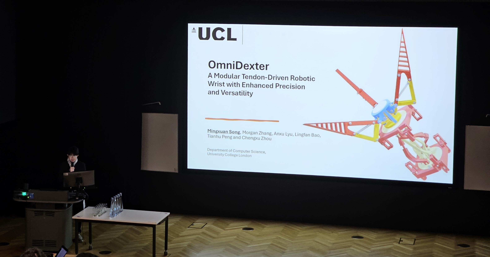
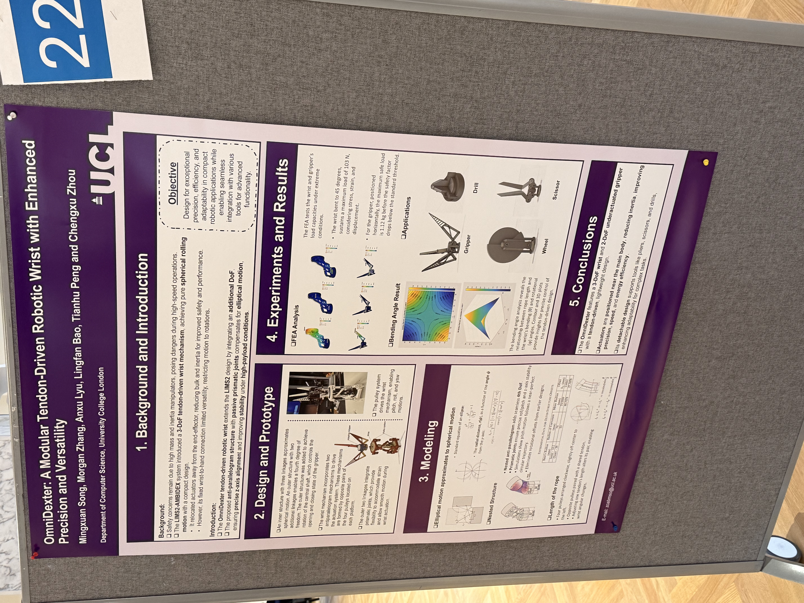

Developed OmniDexter, a modular tendon‑driven robotic wrist and underactuated gripper with enhanced precision and versatility. The design consists of concentric layers: the innermost layer employs worm gears to actuate a 2‑DOF gripper, the middle layer provides continuous 360° rotation, and the outer layer uses an antiparallel four‑pulley linkage to achieve spherical motion. A single motor drives the tendons through the layers, delivering dexterity while keeping the mechanism compact.

